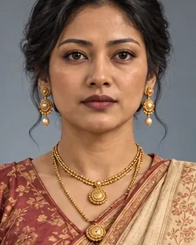

Pakhori Gabharu
17th century · Queen, sister of Lachit Borphukan

Daughter of Momai Tamuli Borbarua and sister of Lachit; queen to Ahom kings.
Record confidence: low.
17th century · Queen, sister of Lachit Borphukan

Daughter of Momai Tamuli Borbarua and sister of Lachit; queen to Ahom kings.
Record confidence: low.